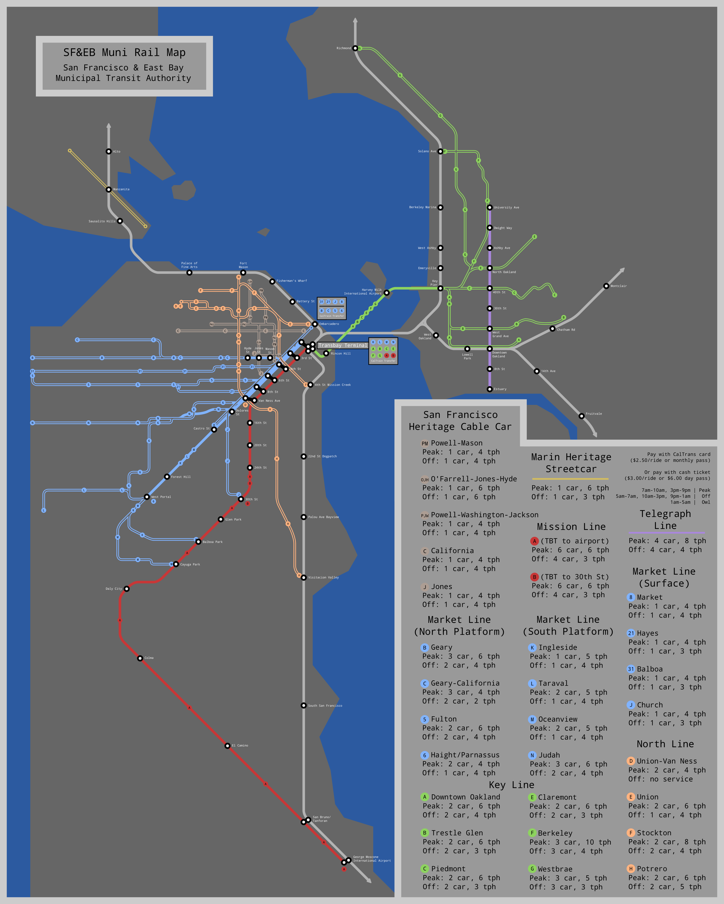

[svg]![[svg]](map.svg){kind=link}
This map depicts an alternate universe where O'Shaughnessy's 1931 plan for the Market Street Subway gets built, the Market Street Railway having been bought out successfully.
It features 4 underground tracks and 2 overground tracks with a very no-frills design optimizing for maximum streetcar throughput; 2 of the underground tracks turn back around the Transbay Terminal, the other 2 emerge onto the surface for a brief 4-tracked surface section running to the Embarcadero.
I've editorialized the following century. In brief:
- The N obsoletes the 7; the L and N are fed with rapid crosstown buses.
- A fully grade separated Mission Street Subway is constructed, running parallel to the Market Street Subway and connected to it by underground hallways.
- A fully grade separated subway is constructed from downtown Berkeley down Shattuck and Telegraph to the Oakland estuary.
- The 31 Balboa takes over the southern trackage of the B Geary, which is rerouted directly west to Lands End.
- The Key System is municipally bought out in 1948 and, in 1956, the organization managing it is merged with the SFMTA to create the San Francisco & East Bay Municipal Railway (SF&EBMR).
- The municipally owned crosstown routes ("North Line") are retained, as are the cable cars as they existed in 1954 before the cuts, the preservation effort having been more successful.
- Treasure Island is redeveloped as a regional airport, to supplement the city's other major airport.
- In 1962, The Market Street Subway is extended from Valencia to meet the Twin Peaks Tunnel.
- Over the course of the 1970s, the H Potrero is extended to Visitacion Valley, the 6 Haight/Parnassus is extended to West Portal, and the J Church, K Ingleside, and M Oceanview are extended to meet the Mission Street Subway.
- In 1985 the H Sacramento is revived as the G Westbrae, and extended on the AT&SF right-of-way to Richmond (the same that BART uses from North Berkeley to Richmond BART stations).
- In the 1990s, California embarks on a massive heavy rail expansion project. As part of this massive investment, the transbay tube is built, rails are added to the lower deck of the Golden Gate Bridge, a tunnel is dug through downtown Oakland, and a heavy rail viaduct is built along the San Francisco waterfront. The extant Peninsula and East Bay heavy rail commuter lines are expanded (reviving and upgrading the Sacramento Northern/Northwestern Pacific routes), grade separated and electrified, and enhanced with high frequency service and extra tracks (up to 4). For a more detailed look at this aspect of the world, see my companion piece to this map.
- In 1995, the F Stockton is extended down 4th to the heavily redevloped Mission Bay area.
- In 2002, the F Berkeley is extended down Solano to the meet the new heavy rail station.
- In 2008, Marin revives the old, unmaintained trackage between the Sausalito ferry pier and Mill Valley to run high frequency heritage streetcars as both a tourist attraction and functional public transport (a la F Market).
The streetcar lines still do not use automatic train control; the headways theoretically mean that it's not necessary, and it's not clear it would actually make this any operationally smoother, if our world's Muni Metro is to go by :P